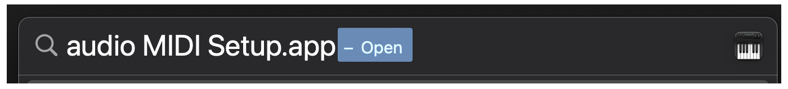
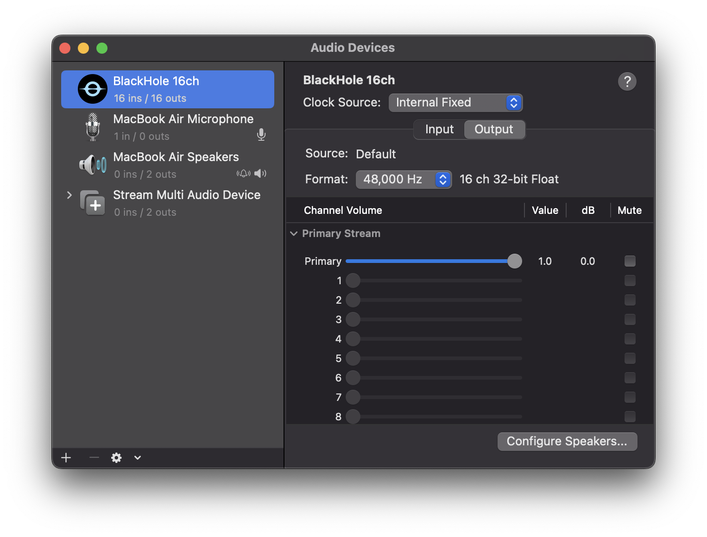
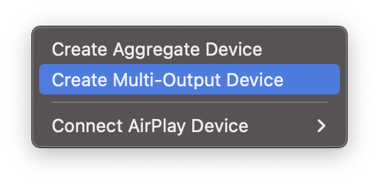
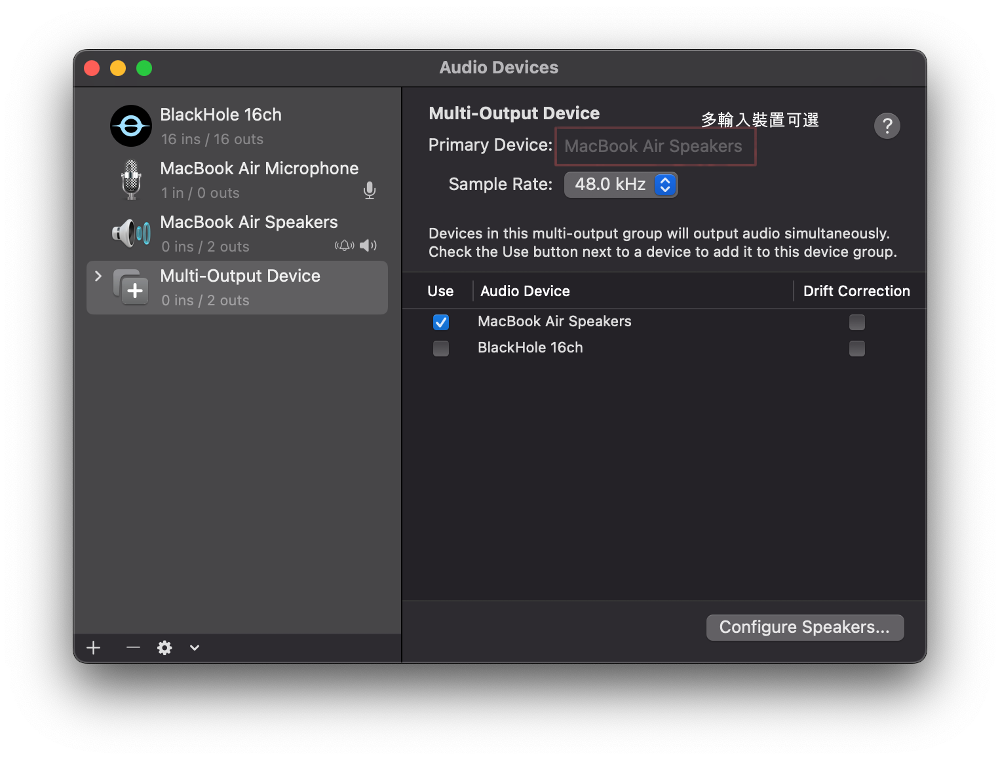
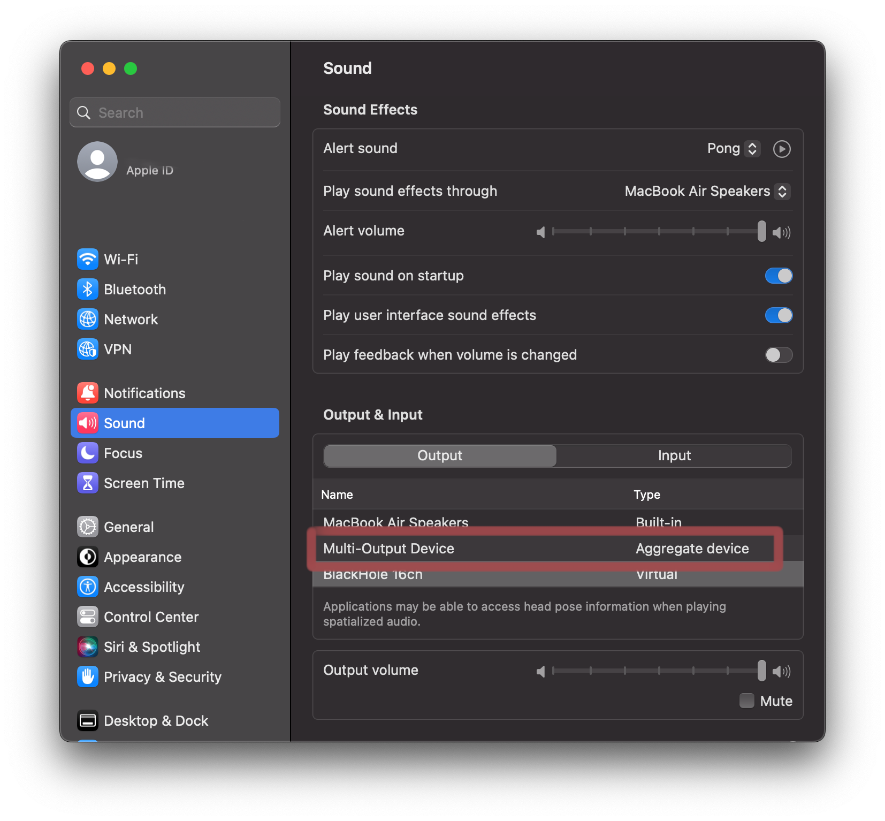
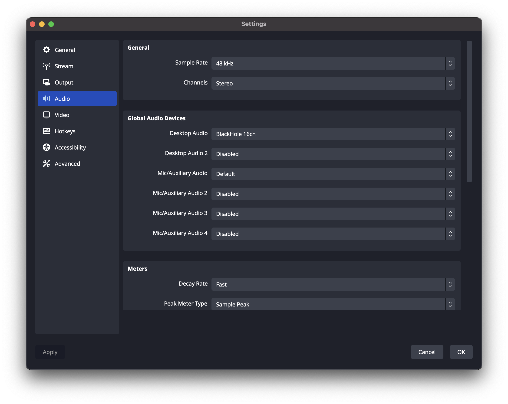

介紹
使用 Mac 的各位可能會注意到 OBS 沒辦法直接擷取電腦音效，所以這篇文章就是要教各位如何設定才能擷取電腦音效。
在 MacOS 13 Ventura 擷取音效
如果使用 OBS Studio 28 版以上的同學們會注意到擷取到電腦的桌面音效或者單一的應用程式音效，其他的一律都沒聲音。
或者是你成功把音效加入 Audio Mixer, 但是視窗隱藏之後就會沒聲音。
這次我們會用一個虛擬音訊輸入輸出工具，叫做 BlockHold。
安裝
BlackHole
BlockHole 是透過錄製內部音效的工具再傳入虛擬介面卡的，它會需要手動設定你想擷取的音效內容，因此我們會需要做一些設定。
-
- 或者使用
brew install blackhole-16ch
- 或者使用
打開 audio MIDI Setup
點擊左下方的 + 建立新的 Multi-Output Device
Create Multi-Output Device
在右邊選單取消選曲 BlockHole 16ch
如果各位有多裝輸入裝置，還可以選擇主要的裝置(Primary Device)
關閉 Audio MIDI Setup
在系統設定 (System Setting) 修改音源 (Sound) 設定
選擇 Multi-Output Device
修改 OBS [ Setting ⌘+, > Audio > Global Audio Devices > Desktop Audio ]

這樣就完成啦
有問題的捧U 可以私訊我本人